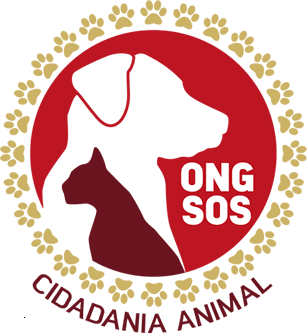
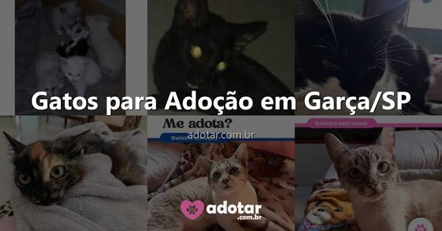

📊 Nosso Impacto em Números: O poder de transformar vidas! 🐾 Atrás de cada dado, existe uma história de superação, carinho e esperança. Olha só o que construímos juntos: 🏡 Animais Adotados: [Número] pets ganharam um recomeço e hoje conhecem o verdadeiro significado de ter uma família. ❤️ Voluntários Ativos: [Número] corações dedicando tempo, amor e cuidado para quem mais precisa. 🚨 Vidas Resgatadas: [Número] animais que deixaram o abandono ou situações de risco para receberem proteção. 🍽️ Alimentos Arrecadados: [Número] kg de ração que garantem barriguinhas cheias e mais saúde. 🩺 Castrações Realizadas: [Número] procedimentos essenciais para o controle populacional e bem-estar animal. Nada disso seria possível sem o apoio de cada um de vocês. Obrigado por fazerem parte dessa corrente do bem! 🐱🐶
SÓ ASSIM IREMOS ACABAR COM OS MALS TRATOS ANIMAIS, VOCÊ PODE NOIS AJUDAR!!!
ADOTE JA

ADOTE, é menos uma vida de mals TRATOS e mais uma vida de carinho na sua VIDA!!! Adote já seu felino.